Two sample permutation tests¶
Suppose that we have a completely randomized experiment, where people are
assigned to two groups at random. Suppose we have  individuals indexed
by 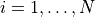. We assign them at random to one of two groups with a random
treatment vector
individuals indexed
by 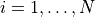. We assign them at random to one of two groups with a random
treatment vector  : if 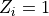, then individual
: if 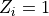, then individual  receives treatment (for
example, a drug) and if 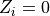, individual receives no treatment (a
placebo). We’d like to test whether or not the drug has an effect on how often
catches a cold. The outcome measure is the number of times somebody gets a cold
wihin one year of starting to take the drug (for simplicity, assume that this
can be measured perfectly). We can measure the difference in outcomes between
the two groups with any statistic we’d like. The statistic will be a function
of the treatment vector and the outcomes, 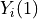 being the outcome under
treatment and 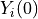 being the outcome under no treatment. We’ll use the
difference-in-means test statistic:
receives treatment (for
example, a drug) and if 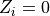, individual receives no treatment (a
placebo). We’d like to test whether or not the drug has an effect on how often
catches a cold. The outcome measure is the number of times somebody gets a cold
wihin one year of starting to take the drug (for simplicity, assume that this
can be measured perfectly). We can measure the difference in outcomes between
the two groups with any statistic we’d like. The statistic will be a function
of the treatment vector and the outcomes, 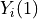 being the outcome under
treatment and 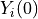 being the outcome under no treatment. We’ll use the
difference-in-means test statistic:
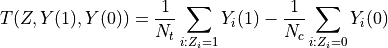
Here, 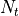 is the number of treated individuals and 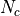 is the number of untreated individuals, so 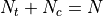. If the test statistic is negative, then we may have evidence that the drug reduces colds. Conversely, if the test statistic is positive, we may believe that the drug actually makes people more vulnerable to getting sick. If we have no a priori belief about what the drug may do, we simply want to know if it has any effect at all. How extreme does the statistic need to be to indicate that there is likely an effect?
If the drug has no effect on colds, then the number of colds that somebody has
would be the same whether he or she received the drug or the placebo. This is
the strong null hypothesis: the drug has no effect on any individual. Under
the strong null, we know both potential outcomes for each individual; namely,
their number of colds would be the same regardless of which treatment group
they were assigned. In mathematical notation, 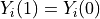 for all
under the strong null.
The random assignment of people to treatment groups ensures that all possible assignments of people to treatment are equally likely. Thus, we can find the null distribution of the test statistic by calculating 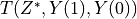 for all possible treatment assignment vectors 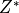. In general, this would not be possible, because for each individual we observe only or , but not both. However, the strong null hypothesis allows us to impute the missing potential outcome for each individual.
There are 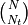 possible values of . In practice, this number is
often too large to enumerate all possible values of .
Instead, we simulate the distribution by taking a random subset of  of the
. Then, our estimated p-value for the test is
of the
. Then, our estimated p-value for the test is
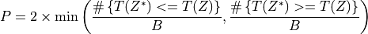
Gender bias in student evaluation of teachers¶
There is growing evidence of gender bias in student evaluations of teaching. To address the question “Do students give higher ratings to male teachers?,” an online experiment was done with two professors, one male and one female [MDH14]. Each professor taught two sections. In one section, they used a male name. In the other, they used a female name. The students didn’t know the teacher’s real gender. We test whether student evaluations of teaching are biased by comparing the ratings when one of the professors used a male name versus a female name.
As an aside, note that we cannot simply pool the ratings for the two professors when they identified as male and when they identified as female. The “treatment” is the gender the instructor reports, but other things affect the ratings students give. For instance, the two instructors may have different teaching styles, thereby introducing differences in the ratings that are unrelated to their identified gender. This is why we choose to focus on one instructor.
Parametric Approach¶
First let us consider the parametric two-sample t-test. In this case, our test statistic is
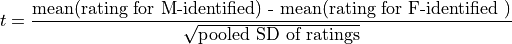
For the two-sample t-test, the null hypothesis is that the reported/perceived instructor gender has no effect on ratings. The alternative hypothesis is that ratings differ by reported/perceived instructor gender. For the two-sample t-test to be valid, we require the following assumptions:
Ratings are normally distributed. (But they are on a Likert 1-5 scale, which is definitely not normal.)
Noise is zero-mean and constant variance across raters. (How should we interpret “noise” in this context? Besides constant variance is not plausible: some raters might give a range of scores, other raters might always give 5.)
Independence between observations. (Students might talk about ratings with their peers in the class, creating dependence.)
Despite the problematic assumptions we are required to make, let’s temporarily assume they hold and calculate a “p-value” anyway.
>>> import numpy as np
>>> import matplotlib.pyplot as plt
>>> from scipy import stats
>>> from permute.data import macnell2014
>>> ratings = macnell2014()
>>> prof1 = ratings[ratings.tagender==0]
>>> maleid = prof1.overall[prof1.taidgender==1]
>>> femaleid = prof1.overall[prof1.taidgender==0]
>>> df = len(maleid) + len(femaleid) - 2
>>> t, p = stats.ttest_ind(maleid, femaleid)
>>> print('Test statistic:', np.round(t, 5))
Test statistic: 1.32905
>>> print('P-value (two-sided):', np.round(p, 5))
P-value (two-sided): 0.20043
Note that the computed “p-value” is above the standard cut-offs for reporting significance in the literature.
Permutation approach¶
For the permutation test we can use the same test statistic, but we will compute the p-value by randomly sampling the exact distribution of the test statistics. The null hypothesis is that the ratings are uninfluenced by reported gender—any particular student would assign the same rating regardless of instructor gender. The alternative hypothesis is that the ratings differ by instructor gender—some students would assign different ratings depending on reported instructor gender. The only assumption we need to make is that the random assignment of students to instruction sections is fair and independent across individuals. This can be verified directly from the experimental design.
>>> from permute.core import two_sample
>>> p, t = two_sample(maleid, femaleid, stat='t', alternative='two-sided', seed=20)
>>> print('Test statistic:', np.round(t, 5))
Test statistic: 1.32905
>>> print('P-value (two-sided):', np.round(p, 5))
P-value (two-sided): 0.27918
>>> p, t = two_sample(maleid, femaleid, reps=100, stat='t', alternative='two-sided', seed=20)
>>> print('P-value (two-sided):', np.round(p, 5))
P-value (two-sided): 0.41584
Since the permutation test also returns the approximately exact distribution of
the test statistic, let’s compare the actual distribution with the
 -distribution.
-distribution.
>>> p, t, distr = two_sample(maleid, femaleid, stat='t', reps=10000,
... alternative='greater', keep_dist=True, seed=55)
>>> n, bins, patches = plt.hist(distr, 25, histtype='bar', density=True)
>>> plt.title('Permutation Null Distribution')
Text(0.5, 1.0, 'Permutation Null Distribution')
>>> plt.axvline(x=t, color='red')
<matplotlib.lines.Line2D object at ...>
>>> x = np.linspace(stats.t.ppf(0.0001, df),
... stats.t.ppf(0.9999, df), 100)
>>> plt.plot(x, stats.t.pdf(x, df), lw=2, alpha=0.6)
[<matplotlib.lines.Line2D object at ...>]
>>> plt.show()
{kind=link}
{kind=link}
The plot above shows the null distribution generated by 10,000 permutations of the data. The t distribution is superimposed for comparison. The null distribution is much more concentrated around 0 than the t distribution, which has longer tails. Furthermore, it is not perfectly symmetric around zero. This is the source of the difference in p-values between the two tests.
Stratified Spearman correlation permutation test¶
Some experimental designs have natural groupings. It makes sense to estimate effects within groups, then combine within-group estimates.
To turn this idea into a permutation test, we carry out permutations within groups, then aggregate the test statistics across groups. This helps control for group-level effects.
More on teaching evaluations¶
We established that one instructor got higher ratings when they used a male name than when they used a female name, but the difference was not significant. Now we may ask, did ratings differ according in this way for either of the two instructors?
If there is no gender bias in the ratings, then students should give the same rating to the male instructor regardless of the gender he claims to be and students should give the same rating to the female instructor regardless of the gender she claims to be. However, we don’t necessarily believe that students would rate the two instructors the same, since there may be some difference in their teaching styles.
Null hypothesis: student by student, the instructor would receive the same rating regardless of reported gender
Alternative hypothesis: there is at least one student who would rate their instructor higher if they identified as male
The test statistic we use within groups is the Spearman correlation. For each instructor, we compute the correlation between their rating and reported gender, then add the absolute values of the correlations for the instructors. Because reported gender is just a binary indicator, the correlation is equivalent to using the mean rating for male-identified instructors as a test statistic.
>>> from permute.stratified import sim_corr
>>> p, rho, sim = sim_corr(x=ratings.overall, y=ratings.taidgender, group=ratings.tagender, seed = 25)
>>> n, bins, patches = plt.hist(sim, 40, histtype='bar')
>>> plt.axvline(x=rho, color='red')
<matplotlib.lines.Line2D object at ...>
>>> plt.show()
{kind=link}
{kind=link}
Finally, I plot the simulated distribution of the test statistics under the null conditioned on the observed data in Figure [fig:figure2].
>>> print('Test statistic:', np.round(rho, 5))
Test statistic: 0.4459
>>> print('P-value:', np.round(p, 3))
P-value: 0.09
At the 10% level, there is a significant difference in ratings between male-identified and female-identified instructors. We could not have computed this p-value with any common distribution, since the null hypothesis assumes some observations (ratings for a single instructor) are exchangeable but others are not.